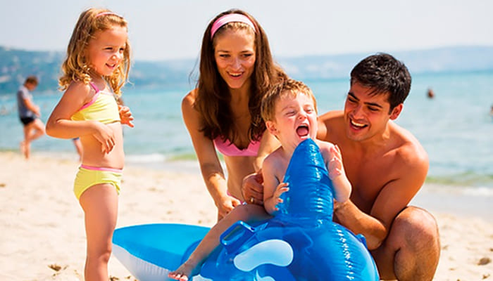
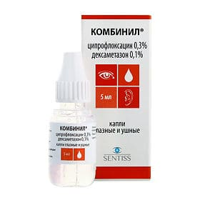
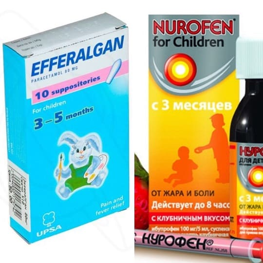
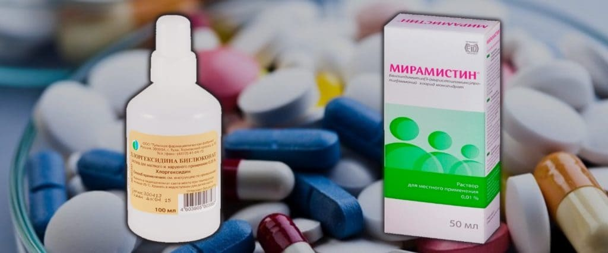
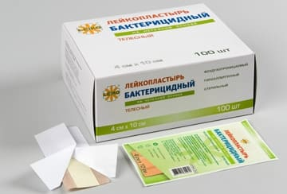
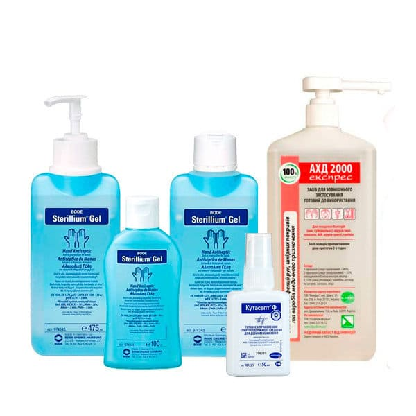

«Доктор, мы планируем поехать с ребенком в отпуск. Какие лекарства нам взять с собой?»

В начале лета это самый частый вопрос у меня в кабинете: семьи с детьми массово едут на море и боятся, что дети там заболеют.
Общепринятых рекомендаций на этот счет нет, все нижесказанное – только мое личное мнение.
Я не рекомендую брать много препаратов, и не рекомендую брать препараты, назначение которых необходимо согласовывать с врачом. То есть антибиотики, спазмолитики, противокашлевые препараты и т. д. брать с собой не надо. Логика проста: эти препараты назначаются только врачом, а там, где есть врач, можно купить и эти препараты.
Поэтому брать надо только:
а) то, что вы сможете применить без/до осмотра врача;
б) то, что помогает от наиболее частых проблем на отдыхе.
САМЫЕ ЧАСТЫЕ БОЛЕЗНИ ДЕТЕЙ НА ОТДЫХЕ В ЖАРКОЙ СТРАНЕ:
1) Солнечные ожоги. Тепловая болезнь.
2) Диарея путешественников.
3) Вирусная пузырчатка, она же турецкая ветрянка, она же болезнь рука – нога – рот (см. главу 14).
4) Отит ныряльщика (он же наружный отит).
5) Конъюнктивит.
6) Ссадины, травмы, ожоги медуз.
7) Обострения хронических заболеваний.
Исходя из этого, для ребенка с собой в отпуск советую взять:
1) Солнцезащитный крем с уровнем защиты не менее 30, водостойкий, подходящий для детей; тщательно обрабатывать кожу ребенка каждый раз перед выходом на прямые солнечные лучи.
2) Гидровит, или Хумана Электролит, если не найдете, то хотя бы Регидрон. Принимать разведенный порошок при повторной рвоте и диарее, для лечения обезвоживания, в объеме не меньше, чем суммарный объем рвоты и стула, дробно (по 1–2 столовой ложке каждые 5 минут, 1–2 литра в сутки).
3) Комбинил Дуо – ушные капли. Разрешены во всем мире с 6 месяцев, в России с 18 лет, но это дефект инструкции, и не более. Закапывать в больное ухо при жжении, зуде и боли в ухе при наружном отите.

4) Нурофен сироп или Эффералган сироп. Применять при высокой лихорадке или боли, в дозировке, указанной в инструкции к препарату, до трех раз в сутки.

NB!
При боли в животе до осмотра врача обезболивающие применять нежелательно!
5) Антисептики (Мирамистин или Хлоргексидин) для обработки инфицированных ран и ссадин.

6) Глазные капли Тобрекс при конъюнктивите.
7) Перевязочный материал: бактерицидный и ленточный лейкопластырь, бинт.

8) Антисептики для профилактической дезинфекции неповрежденной кожи рук: Октенисепт, Стериллиум, Деттол и т. д. Обрабатывать руки перед едой (после мытья с мылом) особенно важно при близком контакте с человеком, страдающим диареей и/или рвотой.

9) Препараты от хронического заболевания вашего ребенка, по согласованию с вашим педиатром (ребенку с астмой – дозированный ингалятор Сальбутамол и спейсер, ребенку с поллинозом – капли Зодак внутрь и глазные капли Опатонол, с атопическим дерматитом – крем Адвантан и таблетки Супрастин и т. д.).
Еще раз: не нужно тащить с собой восемь килограммов лекарств «на всякий случай». Минимализм тут уместен и полезен: и потому, что это лишний вес и лишнее место в чемоданах, и потому, что так у вас будет меньше соблазна заниматься самолечением и больше поводов своевременно обратится за помощью к местным врачам.
(Сергей Бутрий "Здоровье ребенка: современный подход")